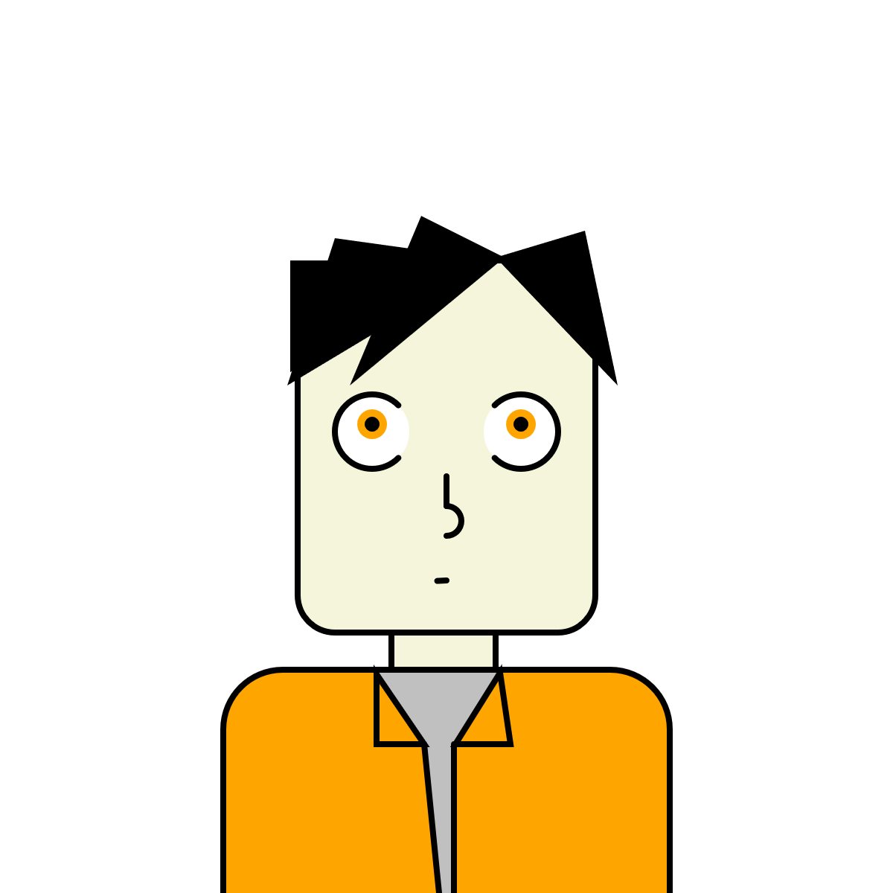

<!DOCTYPE html>
<html lang="en">
<head>
  <meta charset="UTF-8">
  <meta name="viewport" content="width=device-width, initial-scale=1.0">
<div class="container-fluid">
  <!-- PLEASE NO CHANGES BELOW THIS LINE (UNTIL I SAY SO) -->
  <script language="javascript" type="text/javascript" src="libraries/p5.min.js"></script>
  <script language="javascript" type="text/javascript" src="portrait.js"></script>
  <!-- OK, YOU CAN MAKE CHANGES BELOW THIS LINE AGAIN -->
</div>
  <!-- This line removes any default padding and style.
       You might only need one of these values set. -->
  <style> body { padding: 0; margin: 0; } </style>
</head>

<body>

<!--<div class="container-fluid">
  <h1>This is me. It's 2D though. Real life version gets another extra D.</h1>
  
</div>
-->

</body>
</html>
